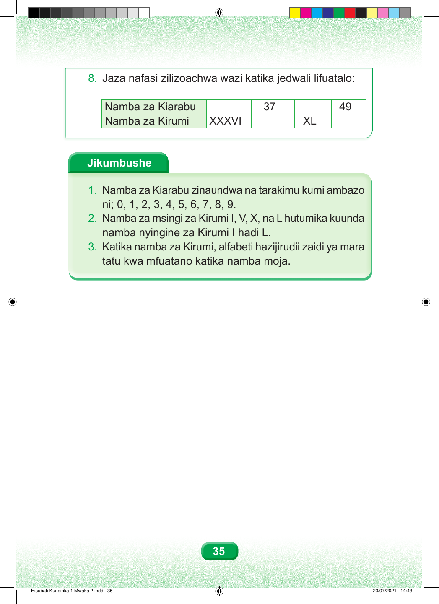

8. Jaza nafasi zilizoachwa wazi katika jedwali lifuatalo: Namba za Kiarabu 37 49 Namba za Kirumi XXXVI XL Jikumbushe 1. Namba za Kiarabu zinaundwa na tarakimu kumi ambazo ni; 0, 1, 2, 3, 4, 5, 6, 7, 8, 9. 2. Namba za msingi za Kirumi I, V, X, na L hutumika kuunda namba nyingine za Kirumi I hadi L. 3. Katika namba za Kirumi, alfabeti hazijirudii zaidi ya mara tatu kwa mfuatano katika namba moja. 35 Hisabati Kundirika 1 Mwaka 2.indd 35 23/07/2021 14:43